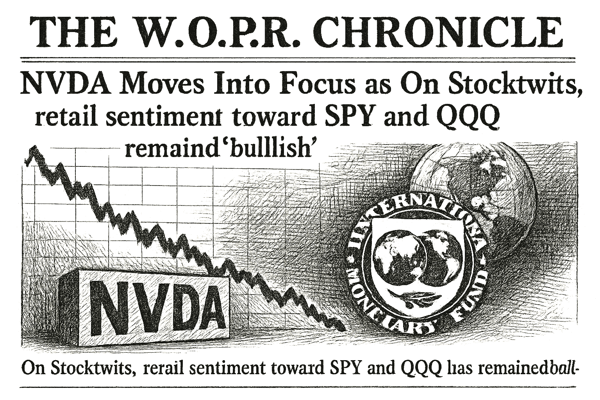

SPY
Current: $777.50Change: -1.60 (-0.20%)
Updated:
Source: yahoo_chartFreshness: fresh


On Stocktwits, retail sentiment toward SPY and QQQ has remained ‘bullish’.

Today's Headline: NVDA Moves Into Focus as On Stocktwits, retail sentiment toward SPY and QQQ has remained ‘bullish’
Setup: On Stocktwits, retail sentiment toward SPY and QQQ has remained ‘bullish’.
Primary Topic: Global Economic Outlook
Specific Development: The IMF has revised its global growth forecast downwards, citing risks from geopolitical tensions and energy constraints.
Why Today Is Different: This revision comes just ahead of significant earnings reports from major tech companies, amplifying market sensitivity.
Secondary Topics: Tech Sector Performance; Geopolitical Risks; Energy Market Dynamics
Tone: cautious
Sectors: Technology; Energy
Companies: NVDA; MU; SPY; QQQ
Commodities: WTI; Brent
Countries Or Regions: Global
Macro Themes: Economic Growth; Geopolitical Tensions
Why This Story: The IMF's warning could lead to increased volatility in tech stocks, which are already under pressure from rising yields and geopolitical uncertainties.
Why This Matters: Nasdaq Futures Sink, Dow Rises Premarket As AI Chip Stocks Wobble Ahead Of Big Bank Earnings: MU, SNDK is the clearest current evidence-led frame for Joshua's observation-only review; missing facts remain explicit intelligence gaps.

Summary: Overnight, global markets reacted to the IMF's forecast, with tech stocks declining while energy stocks showed resilience.
What Happened Overnight: Tech stocks fell sharply, particularly QQQ and SPY, while energy stocks like WTI and Brent saw gains.
What Changed Materially: The IMF's outlook has shifted market sentiment, particularly affecting tech stocks.
Which Assets Sectors Are Affected: Tech; Energy
Does It Look Like Noise Or A Real Regime Input: This appears to be a significant regime input given the IMF's influence on market sentiment.
Why This Matters: Joshua can use verified cross-asset moves and deterministic risk context while keeping causation explicitly unresolved.

TSLA Earnings Expectations — 2026-10-20, After Close
Consensus EPS: $0.43
Year-ago EPS: unavailable
Expected EPS growth: unavailable
Consensus revenue: $28.1B
Year-ago revenue: unavailable
Expected revenue growth: unavailable
Source: finnhub_earnings_calendar · As of: 2026-10-13T14:15:45.335045+00:00 · Freshness: current

- WOPR learning pipeline: Learning present — untrusted
- Candidates evaluated 24h: 0
- Current gate: Learning trust
- Notification ledger events in 24h: 17
- Pending orders created/canceled/filled/expired: 2/2/0/0
- Pending lifecycle interpretation: Pending-order cancellations have trackable reasons and no obvious rapid churn pattern.
- Portfolio risk: Label: High / Score: 92.7
- Latest intelligence gap report: intelligence_gap_report_2026-10-11.pdf
Why This Matters: The active gate is Learning trust, so the key question is why candidates are stopping before approval, not how to force trades.

- Sentinel role: infrastructure and operational status only.
- State: ONLINE
- Last successful validation: 2026-10-13T14:17:39.760343+00:00
- Payloads accepted/rejected: 26256/0
- Node health score: 100
Why This Matters: Sentinel is ONLINE, so Joshua should use its context only to the extent the latest accepted pulse is fresh and authenticated.

CANDIDATES MOVING THROUGH JOSHUA'S INVESTMENT-REVIEW WORKFLOW
FROZEN DAILY BRIEF SNAPSHOT | 2026-10-13T14:11:21.796914+00:00
QUEUE SUMMARY | Investment Ready: 0 | Waiting for Price: 0 | Waiting for Evidence: 2 | Research Underway: 1 | Governance Hold: 6 | Monitor Only: 0
Investment-ready status: No candidates are currently Investment Ready.
#5 AVGO - Governance Hold [Moved Up 6->5]
Joshua's Thesis: Positive thesis not yet established.
Why Waiting: Governance gate has not cleared.
Price: 356.15 now; 356.25 preferred entry
What Unlocks It: Governance gate clears; Clear valuation support; Evidence that the business quality matches the risk being taken
Portfolio Fit: 36.4/100 — LOW ↓
Portfolio Fit Drivers: projected Technology exposure 49.9%; projected AI infrastructure exposure 49.9%; candidate amount $100 vs $100 currently allocated
Candidate Risk: 55.6/100 — FAIR ↑
Risk Drivers: projected Technology exposure 49.9%; projected AI infrastructure exposure 49.9%; candidate amount $100 vs $100 currently allocated
Next: Re-evaluate after the recorded gate clears. Owner: Columbo.
#6 NVDA - Waiting for Evidence [Moved Down 5->6]
Joshua's Thesis: Positive thesis not yet established.
Why Waiting: Positioning gate failed.
Price: 225.99 now; 226.35 preferred entry
What Unlocks It: Clear valuation support; Evidence that the business quality matches the risk being taken; Independent evidence streams pointing the same way
Portfolio Fit: 36.4/100 — LOW ↓
Portfolio Fit Drivers: projected Technology exposure 49.9%; projected AI infrastructure exposure 49.9%; candidate amount $100 vs $100 currently allocated
Candidate Risk: 55.6/100 — FAIR ↑
Risk Drivers: projected Technology exposure 49.9%; projected AI infrastructure exposure 49.9%; candidate amount $100 vs $100 currently allocated
Next: Positioning status must no longer be warning. Owner: Joshua.
#10 PLTR - Governance Hold
Joshua's Thesis: Positive thesis not yet established.
Why Waiting: Governance gate has not cleared.
Price: 209.49 now; 190.28 preferred entry
What Unlocks It: Governance gate clears; Clear valuation support; Evidence that the business quality matches the risk being taken
Portfolio Fit: 36.4/100 — LOW ↓
Portfolio Fit Drivers: projected Technology exposure 49.9%; projected AI software exposure 49.9%; candidate amount $100 vs $100 currently allocated
Candidate Risk: 55.6/100 — FAIR ↑
Risk Drivers: projected Technology exposure 49.9%; projected AI software exposure 49.9%; candidate amount $100 vs $100 currently allocated
Next: Re-evaluate after the recorded gate clears. Owner: Columbo.
#15 QBTS - Governance Hold [Moved Up 16->15]
Joshua's Thesis: Positive thesis not yet established.
Why Waiting: Governance gate has not cleared.
Price: 13.44 now; 17.52 preferred entry
What Unlocks It: Governance gate clears; Clear valuation support; Evidence that the business quality matches the risk being taken
Portfolio Fit: 0.0/100 — VERY LOW
Portfolio Fit Drivers: projected Unclassified exposure 75.1%; projected Unclassified exposure 75.1%; candidate amount $100 vs $100 currently allocated
Candidate Risk: 100.0/100 — VERY HIGH
Risk Drivers: projected Unclassified exposure 75.1%; projected Unclassified exposure 75.1%; candidate amount $100 vs $100 currently allocated
Next: Re-evaluate after the recorded gate clears. Owner: Joshua.
#17 DIA - Research Underway [Moved Down 15->17]
Joshua's Thesis: Positive thesis not yet established.
Why Waiting: Research evidence is still being gathered.
Price: Current price unavailable.; Preferred entry not established.
What Unlocks It: Clear valuation support; Evidence that the business quality matches the risk being taken; Independent evidence streams pointing the same way
Portfolio Fit: 36.4/100 — LOW ↓
Portfolio Fit Drivers: projected ETF exposure 49.9%; projected Broad market exposure 49.9%; candidate amount $100 vs $100 currently allocated
Candidate Risk: 55.6/100 — FAIR ↑
Risk Drivers: projected ETF exposure 49.9%; projected Broad market exposure 49.9%; candidate amount $100 vs $100 currently allocated
Next: Clear valuation support; Evidence that the business quality matches the risk being taken; Independent evidence streams pointing the same way. Owner: Columbo.
#21 RCL - Governance Hold [Moved Up 22->21]
Joshua's Thesis: Positive thesis not yet established.
Why Waiting: Governance gate has not cleared.
Price: 280.64 now; 286.10 preferred entry
What Unlocks It: Governance gate clears; Clear valuation support; Evidence that the business quality matches the risk being taken
Portfolio Fit: 0.0/100 — VERY LOW
Portfolio Fit Drivers: projected Unclassified exposure 75.1%; projected Unclassified exposure 75.1%; candidate amount $100 vs $100 currently allocated
Candidate Risk: 100.0/100 — VERY HIGH
Risk Drivers: projected Unclassified exposure 75.1%; projected Unclassified exposure 75.1%; candidate amount $100 vs $100 currently allocated
Next: Re-evaluate after the recorded gate clears. Owner: Columbo.
#22 SPCX - Governance Hold [Moved Down 21->22]
Joshua's Thesis: Positive thesis not yet established.
Why Waiting: Governance gate has not cleared.
Price: 157.40 now; 158.26 preferred entry
What Unlocks It: Governance gate clears; Clear valuation support; Evidence that the business quality matches the risk being taken
Portfolio Fit: 0.0/100 — VERY LOW
Portfolio Fit Drivers: projected Unclassified exposure 75.1%; projected Unclassified exposure 75.1%; candidate amount $100 vs $100 currently allocated
Candidate Risk: 100.0/100 — VERY HIGH
Risk Drivers: projected Unclassified exposure 75.1%; projected Unclassified exposure 75.1%; candidate amount $100 vs $100 currently allocated
Next: Re-evaluate after the recorded gate clears. Owner: Advisory Committee.
#24 IONQ - Waiting for Evidence
Joshua's Thesis: Positive thesis not yet established.
Why Waiting: Evidence quality is insufficient.
Price: 35.24 now; 40.80 preferred entry
What Unlocks It: Clear valuation support; Evidence that the business quality matches the risk being taken; Independent evidence streams pointing the same way
Portfolio Fit: 0.0/100 — VERY LOW
Portfolio Fit Drivers: projected Unclassified exposure 75.1%; projected Unclassified exposure 75.1%; candidate amount $100 vs $100 currently allocated
Candidate Risk: 100.0/100 — VERY HIGH
Risk Drivers: projected Unclassified exposure 75.1%; projected Unclassified exposure 75.1%; candidate amount $100 vs $100 currently allocated
Next: Data confidence must reach at least 38/100. Owner: Joshua.
#25 UUUU - Governance Hold [NEW]
Joshua's Thesis: Positive thesis not yet established.
Why Waiting: Governance gate has not cleared.
Price: 9.41 now; 14.60 preferred entry
What Unlocks It: Governance gate clears; Clear valuation support; Evidence that the business quality matches the risk being taken
Portfolio Fit: 0.0/100 — VERY LOW
Portfolio Fit Drivers: projected Unclassified exposure 75.1%; projected Unclassified exposure 75.1%; candidate amount $100 vs $100 currently allocated
Candidate Risk: 100.0/100 — VERY HIGH
Risk Drivers: projected Unclassified exposure 75.1%; projected Unclassified exposure 75.1%; candidate amount $100 vs $100 currently allocated
Next: Re-evaluate after the recorded gate clears. Owner: Advisory Committee.
Observation only. This section creates no recommendation, order, authority, or execution instruction.

- Which recorded governance requirement must clear before AVGO can advance?
- If NVDA reaches the recorded price condition <= 226.35, which recorded evidence and governance requirements would still remain?
- Which recorded governance requirement must clear before PLTR can advance?
- Which recorded governance requirement must clear before QBTS can advance?
- What TSLA EPS or revenue result would materially change the current recorded thesis?

The IMF's warning about global growth introduces significant caution to the market, particularly affecting tech stocks that are already under pressure from rising yields. The interplay between geopolitical risks and economic forecasts will likely dictate market sentiment in the near term.

Compared to: 2026-10-12
- Market weather: Still Balanced
- Top opportunity: Still DELL
- Joshua gate: Evidence -> Learning trust
- 2Y Treasury.last_price: 4.8 -> 4.8 (unchanged); 2Y Treasury.last_price changed 0.00% versus the prior frozen Chronicle snapshot.
- 2Y Treasury.percent_change: 1.0526315789473648 -> 1.0526315789473648 (unchanged); 2Y Treasury.percent_change changed 0.00% versus the prior frozen Chronicle snapshot.
- 10Y Treasury.last_price: 5.24 -> 5.24 (unchanged); 10Y Treasury.last_price changed 0.00% versus the prior frozen Chronicle snapshot.
- 10Y Treasury.percent_change: 0.3831417624521162 -> 0.3831417624521162 (unchanged); 10Y Treasury.percent_change changed 0.00% versus the prior frozen Chronicle snapshot.
- 30Y Treasury.last_price: 5.6 -> 5.6 (unchanged); 30Y Treasury.last_price changed 0.00% versus the prior frozen Chronicle snapshot.
- 30Y Treasury.percent_change: 0.0 -> 0.0 (unchanged); Baseline was zero; percentage significance is unavailable.
- SPY.last_price: 777.6 -> 777.495 (down); SPY.last_price changed 0.01% versus the prior frozen Chronicle snapshot.
- SPY.percent_change: -0.19124876458432388 -> -0.20472602651812077 (down); SPY.percent_change changed 7.05% versus the prior frozen Chronicle snapshot.
- QQQ.last_price: 743.86 -> 743.77 (down); QQQ.last_price changed 0.01% versus the prior frozen Chronicle snapshot.
- QQQ.percent_change: -2.0798778400863487 -> -2.0917252455045663 (down); QQQ.percent_change changed 0.57% versus the prior frozen Chronicle snapshot.
- IWM.last_price: 276.585 -> 276.63 (up); IWM.last_price changed 0.02% versus the prior frozen Chronicle snapshot.
- IWM.percent_change: -1.6901258264022163 -> -1.6741309447643349 (up); IWM.percent_change changed 0.95% versus the prior frozen Chronicle snapshot.

The IMF's warning introduces new concerns about economic stability, prompting a reassessment of tech stock valuations.
No specific warnings from yesterday's brief were applicable today.
Portfolio Construction Review
Current allocation: 100.5 allocated.
Largest sector: Unclassified at 50.4%.
Largest theme: Unclassified at 50.4%.
Diversification: Mixed (49.6).
Cash allocation: 90.0% unallocated.
Recommended exposure: DELL at portfolio-fit score 36.6.
Portfolio fit: DELL has strong standalone evidence, but it increases portfolio concentration.
Why This Matters: Portfolio Manager evaluates whether an opportunity improves this portfolio; it does not select the investment, vote, or authorize execution.

Focus on the implications of the IMF's forecast for tech earnings and overall market stability.

| Can trigger trade | no |
| Can modify trade rules | no |
| Can add watch items | yes |
| Can add review questions | yes |
| Can adjust confidence notes | yes |
| Input policy | external_intelligence_plus_sanitized_internal_observations |
| External policy | The Editor-in-Chief synthesizes current world/market context where available and labels unknowns; provider/model provenance remains separate. |
| Internal policy | Joshua/WOPR/Sentinel facts are supplied as sanitized observation-only summaries. |
| Editorial model | gpt-4o-mini |
- Selected by a deterministic daily rotation through symbols already present in the persisted Chronicle snapshot.
- Next earnings: October 22, 2026 (time unknown); status: scheduled.
- Source: finnhub_earnings_calendar.
- AI Infrastructure Stocks With Real Earnings Leverage From Ciena, Micron And KLA
- Desk: earnings; source: Yahoo; linked symbols: MU.
- Published: 10/12/26 11:09 MST.
- High-impact watch: FOMC Meeting Two-day meeting, October 27 - 28 Press Conference - 10/28/26 11:00 MST.
- Affected assets: US equities, Treasuries, USD; source: federal_reserve_calendar.
- TSLA earnings: October 20, 2026, after close.
- LTC earnings: October 22, 2026, time unknown.
- RCL earnings: October 27, 2026, before open.
- Energy: 4.29% session performance; source: persisted sector ledger.
- Consumer Staples: 2.89% session performance; source: persisted sector ledger.
- Health Care: 1.63% session performance; source: persisted sector ledger.
- ETHUSD: 1.45% recorded move; price: 2521.48.
- Session: 24h; catalyst status: no_verified_catalyst; source: yahoo_chart.
- Tech earnings reports; why it matters: These reports will provide insight into how companies are navigating the current economic landscape.
- State: narrow_leadership; score: 57.40/100; advance/decline ratio: 1.64.
- Above 50-day average: 37.80%; sample: 119; provider: sentinel_sampled_breadth.
- Decision outcomes evaluated: 16; currently untestable: 0.
- Warning review: still watching 3; confidence calibration: insufficient_sample.
- Current macro regime: defensive_rotation; change probability: unavailable.
- Risk dashboard: neutral (50/100); breadth: narrow_leadership; sentiment: neutral.
- Scenario board only - a current-state observation, not a forecast or execution instruction.
- Created the intellectual foundations of value investing and security analysis.
- Published quotation: "The intelligent investor is a realist who sells to optimists and buys from pessimists."
- Published framework: Estimate intrinsic value from verifiable business facts, buy only at a meaningful discount, diversify, and use the margin of safety to protect against analytical error and an uncertain future.
- Committee lens: Graham forces valuation discipline: what evidence supports intrinsic value, where is the margin of safety, and how badly could the estimate be wrong?
- Public philosophy profile only; no participation, endorsement, or current recommendation is implied.
- Which recorded governance requirement must clear before PLTR can advance?
- DELL: No canonical symbol-specific material event is linked.
- Attach the missing DELL evidence before the next committee review.
- Which recorded governance requirement must clear before AVGO can advance?
- If NVDA reaches the recorded price condition <= 226.35, which recorded evidence and governance requirements would still remain?
- Which recorded governance requirement must clear before PLTR can advance?
- Which recorded governance requirement must clear before QBTS can advance?
- Evidence agenda: DELL - No canonical symbol-specific material event is linked.
- Proposed review: Geopolitical developments; why it matters: Ongoing tensions could further impact energy prices and market sentiment.
- Proposed review: IMF updates; why it matters: Further updates from the IMF could shift market expectations.
- Canonical instruments reviewed: 24; delayed 3, fresh 18, stale 3.
- Leading sources: yahoo_chart (21), treasury_official_yield_curve (3).
- Snapshot recorded: 10/13/26 07:15 MST.
NVDA Moves Into Focus as On Stocktwits, retail sentiment toward SPY and QQQ has remained ‘bullish’
Storm meter: Cautious
#5 AVGO - Governance Hold [Moved Up 6->5]
Observation mode: observation_only
Watch: Tech earnings reports; why it matters: These reports will provide insight into how companies are navigating the current economic landscape.
Question: Which recorded governance requirement must clear before AVGO can advance?